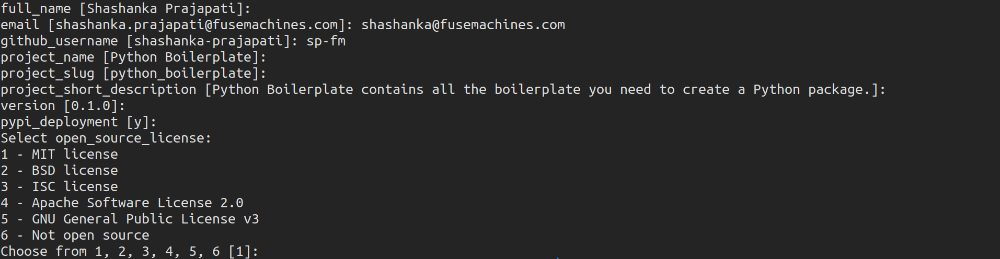

Cookiecutter¶
Cookiecutter is a command-line utility that creates projects from project templates.
I have created a cookiecutter using the tools mentioned in this training at https://github.com/sp-fm/fuse-framework
Installation¶
$ pip install cookiecutter --user --upgrade
Usage¶
$ cookiecutter gh:sp-fm/fuse-framework
This will prompt some questions related to the project that is being generated.
Once you fill out all those questions you will have a ready to use skeleton of a project with all the tools mentioned in this training session. (without the awesome calculator app of course). Enjoy!!!